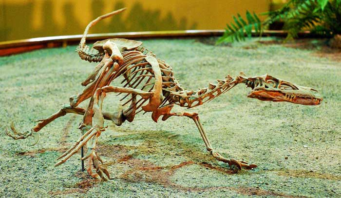
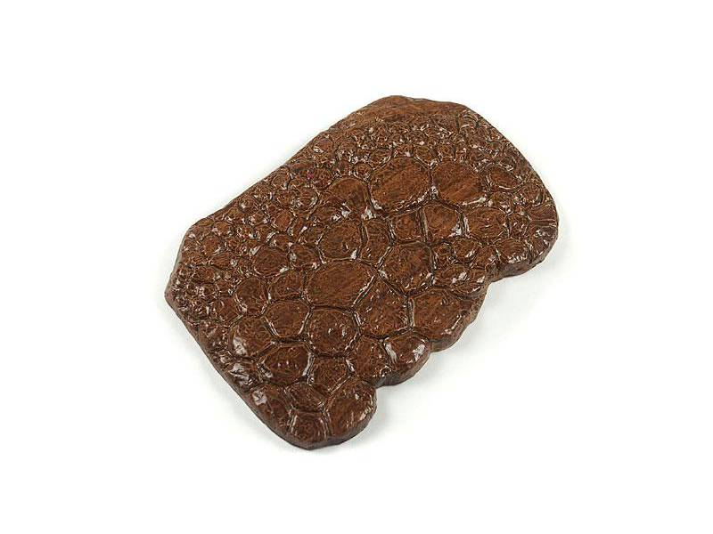

Der Velociraptor lebte hauptsächlich in teilen von Asien wie der Mongolei, China und Russland.
Velociraptoren waren Carnivore Tiere und ernährten sich somit ausschließlich von Fleisch.
Es ist leidder nur sehr wenig über den Velociraptor bekannt, aber man konnte durch die zusammenstellung von Fossilien feststellen, dass sie warscheinlich in Rudeln jagten und auch in anderen bereichen sehr intiligente Tiere waren.
Leider konnte man aus den bisher gefundenen Fossilien auch mit modernster Technik keine Information zur Farbe der Haut oder Schuppen des Velociraptors herausfinden, jedoch konnte man anhand von Abdrücken in Stein die Textur jener Haut und Schuppen feststellen.
Seine feinde waren sowohl die stärkeren seiner Beutetiere wie auch seine Konkurrenten.
Der Velociraptor besaß am zweiten Zeh eine imens große sichelförmige Kralle mit welcher seine Beute sowol festhielt als auch tötete.
Velociraptor war wohl bis zu einem gewissen Grad warmblütig (endotherm), die Wachstumsrate der Knochen von Dromaeosauriden deutet jedoch auf einen im Vergleich zu Säugetieren und Vögeln geringeren Stoffwechsel (Metabolismus) hin.